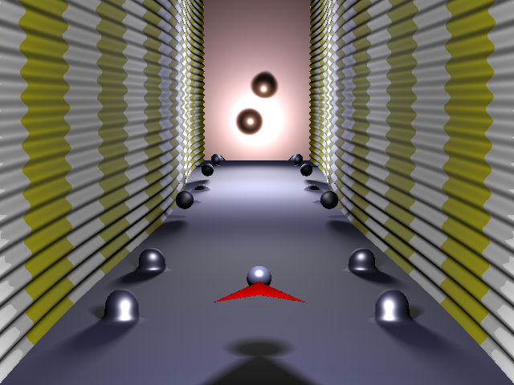

Not in game
Use the left and right keys on your keyboard ( and ) to move the player left and right.
Use the spacebar to fire a projectile.
A projectile will continue in the direction it was shot in until one of two things happens:
1. It hits an obstacle. This will cause the projectile to be destroyed, and possibly the obstacle, depending on the obstacle's type. When this occurs, the projectile will be available to you to shoot again.
2. It goes out of the player's view before it hits an obstacle. If this occurs you will receive the projectile again, allowing you to shoot again, after it goes out of view.
Obstacles have one of three shapes. Each of these are shown below.
An obstacle that is green, like those above, can be destroyed with projectiles.
An obstacle that is red, like the one below, cannot be destroyed with projectiles.
The aim of each level is to reach the 'goal plane' at the end.
Just underneath the game screen there is a blue bar with text on it. This will be the FPS while you are in-game, and will display information otherwise.
There are a number of options accessible from the level selection screen and the pause menu. (The pause menu may be accessed by selecting the pause button in the top-right corner of the game screen.) Below is a screenshot of these options.
The 'Canvas Size' property allows you to change the resolution that the game is rendered at. Lowering this will improve performance if you have a slower device / GPU.
The 'Number of Physics Substeps' property indicates how many 'substeps' should be made when doing physics calculations. Essentially this ensures that the player / projectiles do not travel through obstacles without a colliision being detected. This option is only really important if you have a very low frame rate, in which case it is adviseable to turn down the Canvas Size property anyway. Generally, though, increasing this will make collisions more accurate.
The 'Screenshot size' property controls the width and height of screenshots. Warning: Making the screenshot dimensions excessively large may cause your web browser to run out of memory, which will cause the game to crash.
Screenshots can be taken through the pause menu. As shown in the image below, the screenshot button is the lowest button in the pause menu.
Screenshot size can be changed through the options. Screenshots are automatically saved to your computer when this button is clicked, with the name screenshot.png.
Created by Albert Smith in 2017